Aktuálna ponuka
Nehnuteľnosti, ktoré ponúkam
16 nehnuteľností na predaj a prenájom. Vyberte typ, alebo napíšte lokalitu.
16 z 16 ponúk
 Pozemok5
140 000 €NEO - MAJCICHOV - stavebný pozemok
Majcichov
800 m²
Na predaj stavebný pozemok v obci MajcichovPonúkame na predaj stavebný pozemok o výmere 800 m² v obci Majcichov, len 11 km od Trnavy.Parametre…
Pozemok5
140 000 €NEO - MAJCICHOV - stavebný pozemok
Majcichov
800 m²
Na predaj stavebný pozemok v obci MajcichovPonúkame na predaj stavebný pozemok o výmere 800 m² v obci Majcichov, len 11 km od Trnavy.Parametre…
 Pozemok6
78 000 €NEO - HORNÁ KRUPÁ- stavebný pozemok na predaj
Horná Krupá
930 m²
Stavebný pozemok na predaj – Horná KrupáHľadáte rovinatý pozemok na stavbu rodinného domu v pokojnej lokalite s dobrou dostupnosťou do mesta?…
Pozemok6
78 000 €NEO - HORNÁ KRUPÁ- stavebný pozemok na predaj
Horná Krupá
930 m²
Stavebný pozemok na predaj – Horná KrupáHľadáte rovinatý pozemok na stavbu rodinného domu v pokojnej lokalite s dobrou dostupnosťou do mesta?…
 Komerčné priestoryNové5
Cena dohodouNeo - nová hala na prenájom – Zavar ( pri STK) 537 m²
Zavar
537 m²
Moderná novostavba - VÝRONÁ / SKLADOVÁ HALA v strategickej lokalite pri Trnave!Ponúkame na prenájom novú halu s celkovou výmerou 537 m² vrátane…
Komerčné priestoryNové5
Cena dohodouNeo - nová hala na prenájom – Zavar ( pri STK) 537 m²
Zavar
537 m²
Moderná novostavba - VÝRONÁ / SKLADOVÁ HALA v strategickej lokalite pri Trnave!Ponúkame na prenájom novú halu s celkovou výmerou 537 m² vrátane…
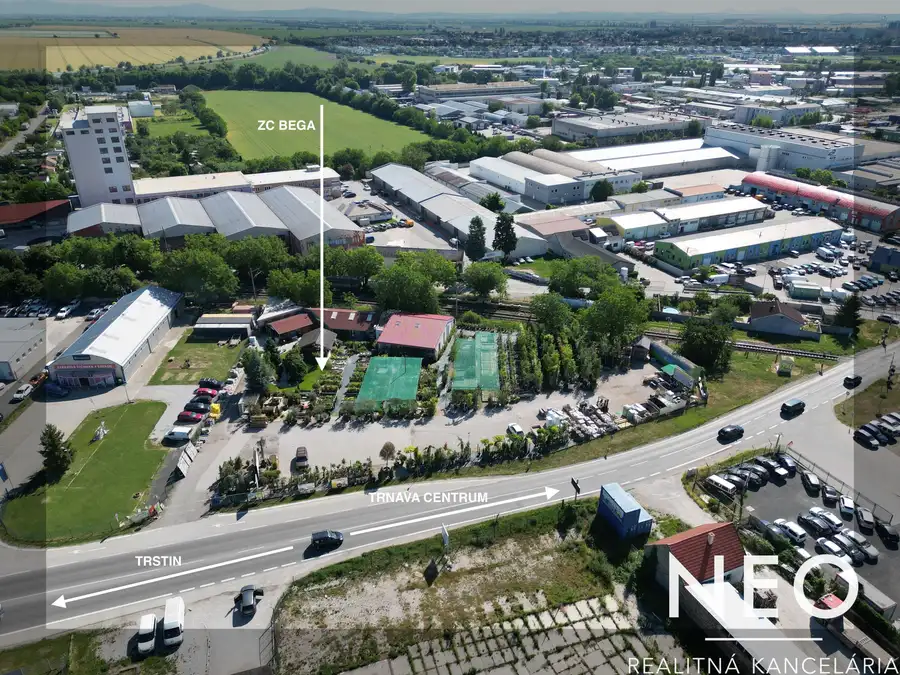
PozemokNové10 Cena dohodouNEO - Trnava- Trstínska- pozemok, obchodné a kancelárske priestory pre komerčné využitie Trnava 4814 m² Komerčný pozemok, obchodné a kancelárske priestory na predaj – Trnava, TrstínskaPonúkame na predaj atraktívny komerčný pozemok vo frekventovanej… Komerčné priestory10
Cena dohodouNeo - Trnava - úplne nová výrobná/skladová hala - prenájom / predaj
Trnava
5950 m²
Na prenájom úplne nová výrobná, alebo skladová hala – Automobilová ulica, TrnavaCelková výmera haly je takmer 6 000 m² s možnosťou flexibilného…
Komerčné priestory10
Cena dohodouNeo - Trnava - úplne nová výrobná/skladová hala - prenájom / predaj
Trnava
5950 m²
Na prenájom úplne nová výrobná, alebo skladová hala – Automobilová ulica, TrnavaCelková výmera haly je takmer 6 000 m² s možnosťou flexibilného…
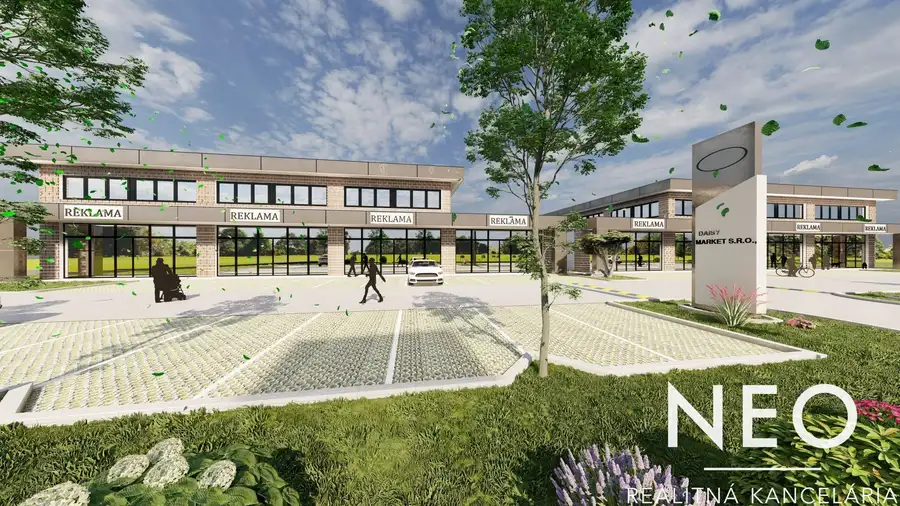
Komerčné priestory9 Cena dohodouNEO - TRNAVA - 87 m2 - priestory na prenájom v novom projekte Daisy Market, TMT Trnava 86.7 m² Takmer 87 m² moderných administratívnych priestorov v pripravovanom projekte Daisy Market, TMTPriestor na prvom poschodí.Vhodný nielen na…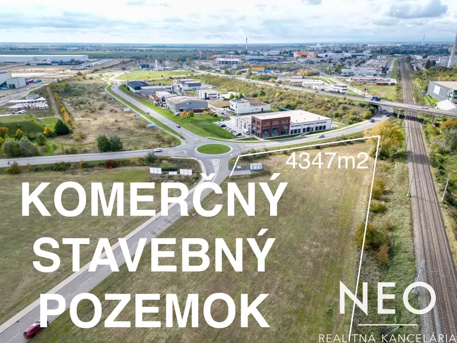
Pozemok10 Cena dohodouNEO - TRNAVA - Investičný komerčný pozemok – priamo pri hlavnom ťahu do obchodnej zóny TMT (OBI, Kaufland) Trnava 4347 m² Ponúkame na predaj lukratívny komerčný pozemok s výbornou viditeľnosťou, nachádzajúci sa pri kruhovom objazde na vstupe do obchodnej zóny TMT – pri…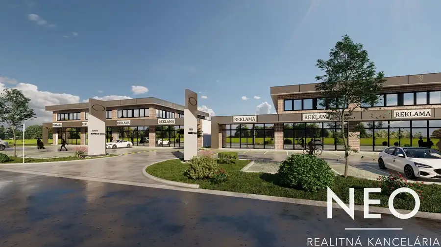
Komerčné priestory10 Cena dohodouNEO -TRNAVA - administratívne priestory na prenájom v novom projekte Daisy Market Trnava 288 m² Ako výhradný sprostredkovateľ ponúkame na prenájom moderné administratívne priestory v pripravovanom projekte Daisy Market v komerčnej zóne TMT Mall,…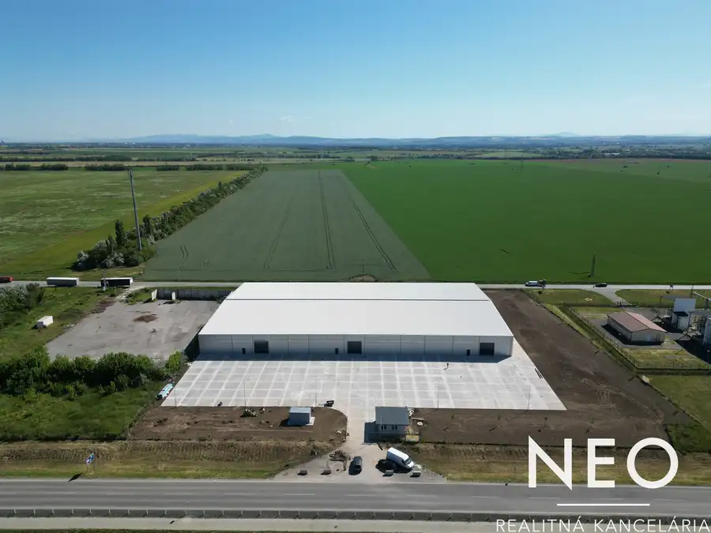
Komerčné priestory10 Cena dohodouNEO - TRNAVA - ÚPLNE NOVÁ výrobná/skladová HALA Trnava 6000 m² Popis nehnuteľnostiÚplne nová výrobná, alebo skladová hala – Automobilová ulica, TrnavaCelková výmera haly je takmer 6 000 m² s možnosťou…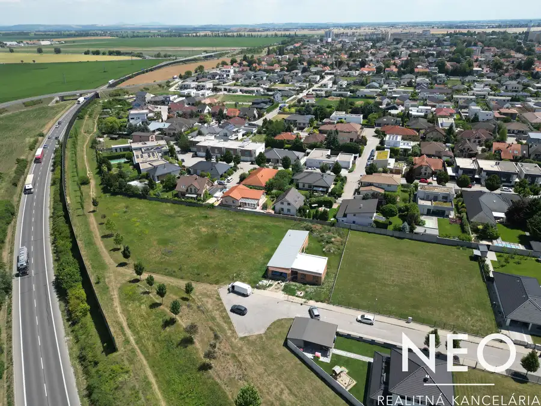
Pozemok8 Cena dohodouNEO- TRNAVA, Pekné pole - Stavebný pozemok Trnava 1343 m² V lokalite, kde je skutočný nedostatok pozemkov Trnava – PEKNÉ POLEponúkame na predaj veľkorysý stavebný pozemok, s možnosťou rozdelenia na dva… Komerčné priestory10
Cena dohodouNEO - TRNAVA - obchodné priestory na prenájom v novom projekte v zóne TMT Mall
Trnava
177 m²
Ako výhradný sprostredkovateľ ponúkame na prenájom obchodné a administratívne priestory v pripravovanom projekte Daisy Market v komerčnej zóne TMT…
Komerčné priestory10
Cena dohodouNEO - TRNAVA - obchodné priestory na prenájom v novom projekte v zóne TMT Mall
Trnava
177 m²
Ako výhradný sprostredkovateľ ponúkame na prenájom obchodné a administratívne priestory v pripravovanom projekte Daisy Market v komerčnej zóne TMT…
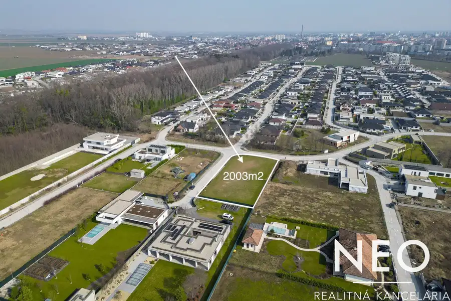
Pozemok7 Cena dohodouNeo - kamenny mlyn - Trnava - 2003m2 Trnava 2003 m² Popis nehnuteľnosti2003 m2 - rozloha, ktorú ponúka KAMENNÝ MLYN len zriedkaPOZEMOK PRE KLIENTA, KTORÝ HĽADÁ VIAC NEŽ LEN LOKALITU.Výnimočný stavebný…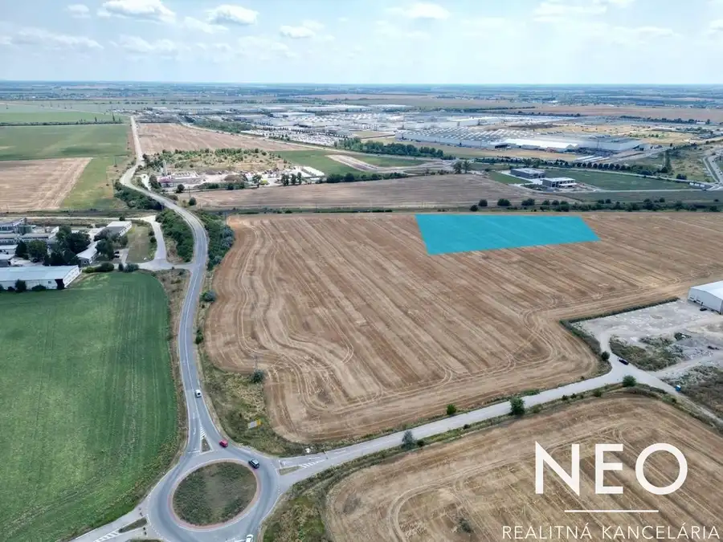
Pozemok2 Cena dohodouNEO - TRNAVA - Priemyselný pozemok pri obchvate Trnava 4800 m² Ponúkame na predaj stavebný pozemok s výmerou 4800 m² v strategickej lokalite pri Trnavskom obchvate. Pozemok je ideálny pre výstavbu výrobných,…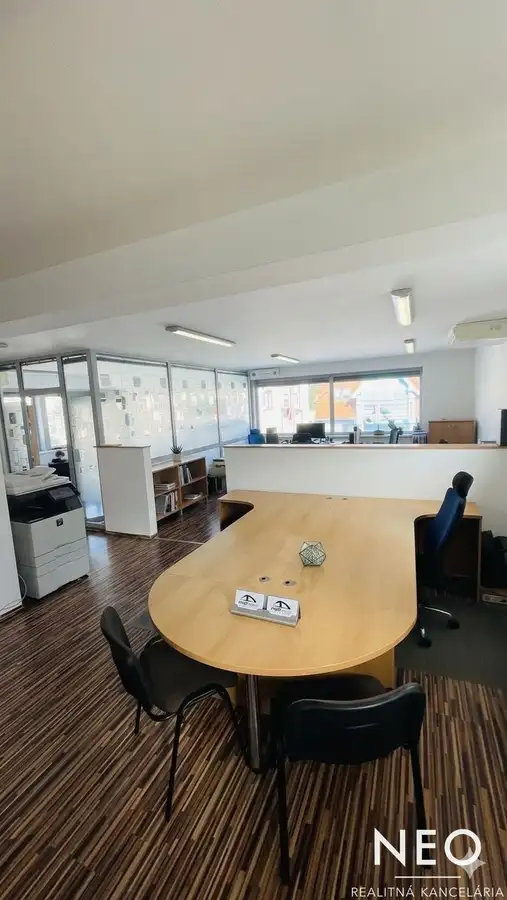
Komerčné priestory10 1 700 €NEO - TRNAVA - Kancelárske priestory - 105m2, open-space, rokovacie miestonosti, terasa, parkovanie, garaz Trnava 105 m² EXKLUZÍVNY KOMERČNÝ PRIESTOR S TERASOU, PARKOVANÍM, GARÁŽOU A NABÍJAČKOU PRE ELEKTROMOBILPonúkame na prenájom moderný a reprezentatívny komerčný…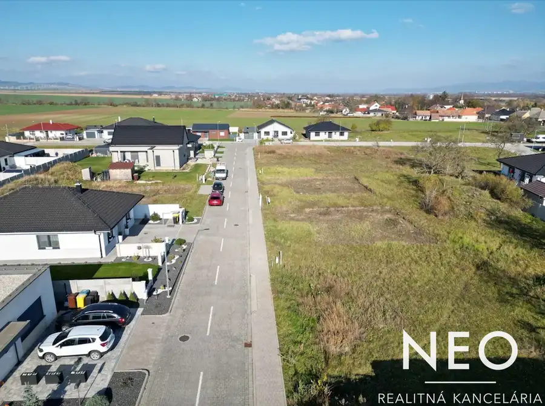
Pozemok3 139 000 €Neo - Veľké kostolany Veľké Kostoľany 880 m² Hľadáte veľký stavebný pozemok neďaleko Trnavy?Tento priestranný pozemok v modernej lokalite Vysielač je skvelou príležitosťou. Lokalita: len 20…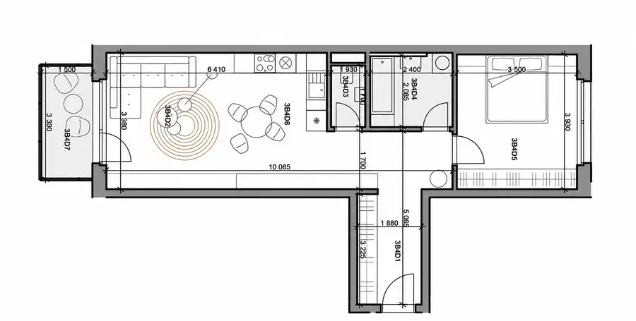
BytNové7 Cena dohodouNEO -Prenájom- Veľký 2-izbový byt v projekte Cukrovar | Nový, kompletne zariadený | garáž + pivnica Trnava 2-izbový53 m²3. podlažie Ponúkame na prenájom nadštandardne priestranný 2-izbový byt s výmerou v obľúbenom rezidenčnom projekte Cukrovar v Trnave. Byt bude kompletne…Tomuto výberu zatiaľ nezodpovedá žiadna ponuka. Napíšte mi, čo hľadáte.